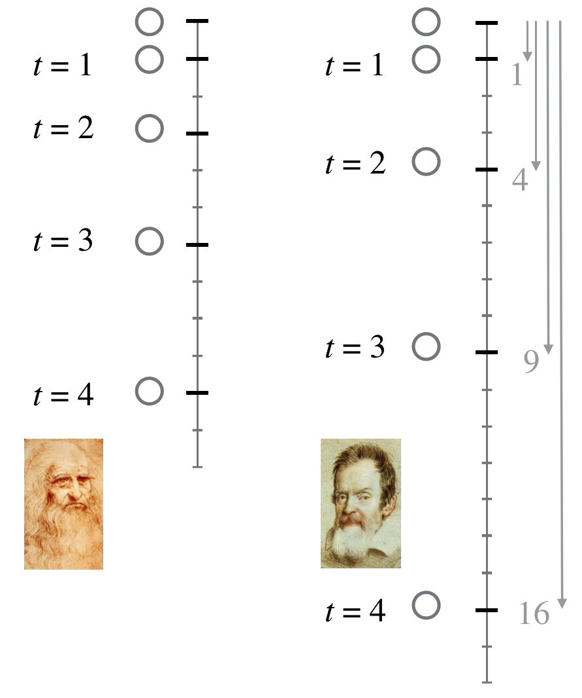
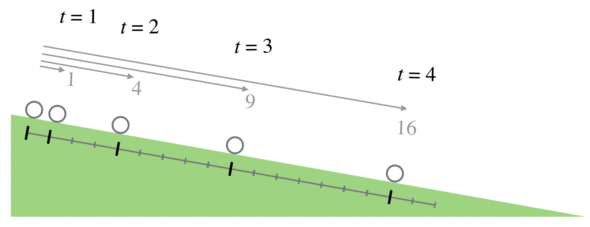
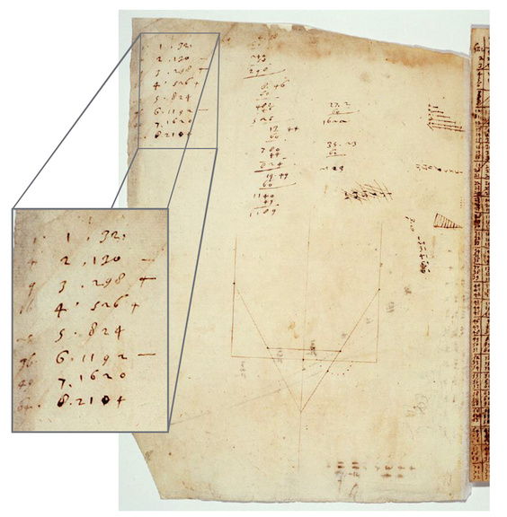
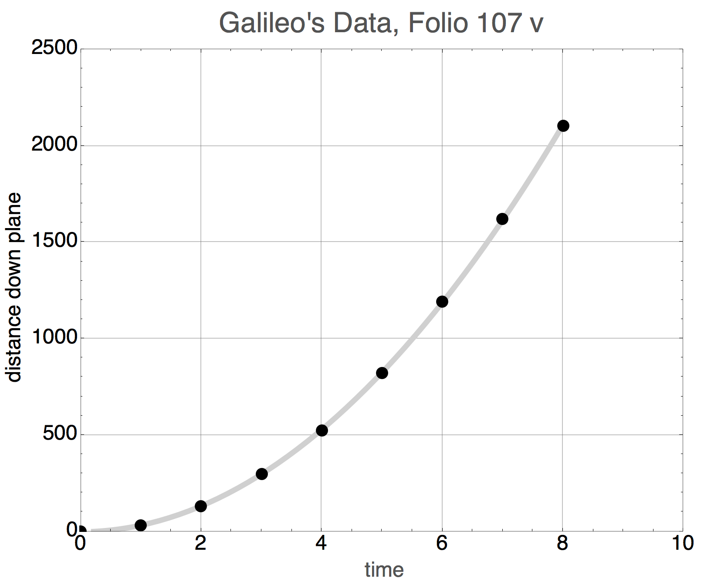
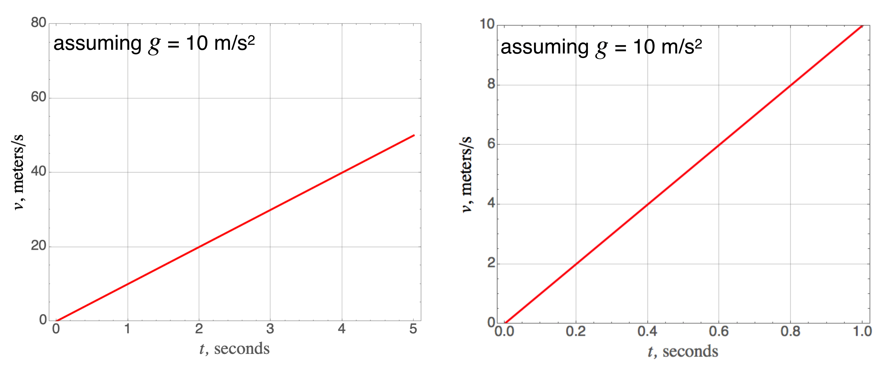
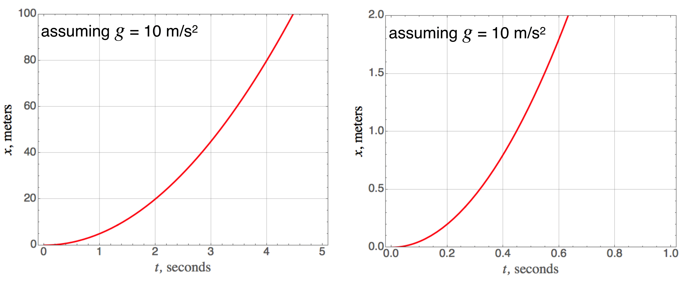
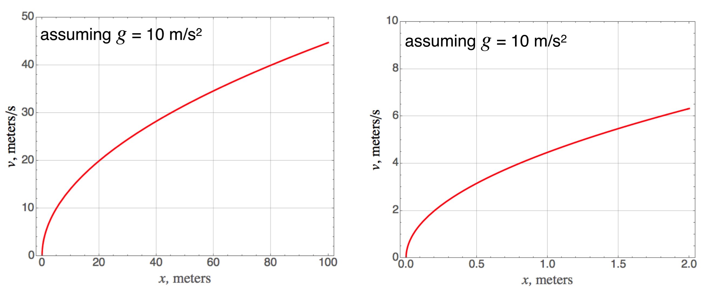

5.7. Back to Galileo: Acceleration#
Galileo’s study of mechanics didn’t result in a system, like Aristotles or Newton’s. It was a loosely-connected collection of experiments and speculations. There were some themes, though, and they followed a rough intellectual chronology:
pendulum
free-fall
uniformly accelerated motion
unimpeded motion
projectiles
relativity
materials science and the strength of materials
Free-fall and the pendulum were a part of his immature speculations in de Motu from Pisa but I’ll cover free-fall first. Then we’ll see why pendula inspired him.
He wasn’t helpful to later biographers as it’s hard to figure out what he did, and when he did it. Here’s a rough guess:
Pisa: 1589-1592…maybe pendula, falling bodies, inclined plane?
Padua: 1592-1610…certainly the pendulum, falling bodies, the inclined plane, projectiles, and relativity
Padua: 1608 on…his telescopic observations begin
Florence: 1610-1634…his Dialogue Concerning the Two Chief World Systems, 1630
Arcetri, house arrest: 1633-1642…Discourse on Two New Sciences, 1638
How do we know what he did? That’s been the subject of nearly 400 years of Galileo Scholarship which continues today. His first biographer was his faithful student, Vincenzo Viviani (1622-1703) whose legacy is problematic as he appears to have just made up stuff. So legends began and were then slowly debunked over centuries.
The story of his papers is right out of a bad TV movie. They were preserved by those close to him when he died and passed from Viviani, to his nephew, to a nephew of a nephew…and then they vanished when that last descendent discarded them in 1737. Then along comes Florentine nobleman Giovanni Battista Nelli, who wanted some mortadella for a picnic and upon sitting to eat discovers that the sausage had been wrapped in paper with Galileo’s handwriting. He rushed back to the butcher and found that he had been wrapping meat in paper discarded by the previous owner of the building. Nelli purchased all of the scraps and made cataloging the documents and writing a massive biography of Galileo his life work. Those manuscripts are now today in the Biblioteca Nazionale Centrale, Florence, Istituto e Museo di Storia della Scienza, Florence, and the Max Planck Institute for the History of Science, Berlin and on-line at: Galileo manuscripts . There you can find high resolution photographs of the pages and translations of the handwritten texts. We’ll see some of them in a bit.
5.7.1. Pisa To Padua#
Galileo’s Common-law wife and children For a professor to remain single was not unusual and Galileo was a frequent visitor to Venice and its literary and art community. This was a sophisticated society with thousands of highly literate courtesans. While little is known about the early relationship between Galileo and Marina di Gamba, some have speculated that she might have been such a professional companion. Galileo stayed with her for almost a decade, which might suggest that they were intellectually compatible – indeed, given his personality, it would have been surprising were he to spend time with someone not up to his conversational standard.
In any case, Gamba moved to Padua to live with him where they had three children, two girls and a boy. (Birth records do not refer to a father.) When he went back to Florence in 1610, he took Livia and Virginia (aged 9 and 10) with him but left four-year old Vincenzio with Gamba, who remained in Padua and eventually married.
He installed the girls in convents, where they would cost no dowry, and brought his son to Florence. Eventually, Vincenzo became a musician and was partially supported by the Pope, as a deference to Galileo. Virginia, later Sister Maria Celeste, relied on him for his influence in supporting her convent. She died in 1633, the year he entered house arrest as an old man. He was devastated.
Galileo’s salary Pisa as a mathematics and astronomy professor was abysmally low and he was clearly ready for a more lucrative position – plus nobody in Pisa was eager to have him around. So after three years, when he was offered a job at the University of Padua at the age of 28 he took it and stayed for 18 years until 1610. Not only was his salary higher, the Venetian Republic was a much more independent region of Italy.[1] Indeed, unlike Florence in Tuscany where connections to Rome and the Papacy were long-standing, Venice was often in the Papal Doghouse for its independent ways (five popes essentially excommunicated the entire city…and five popes changed their minds). Here Galileo became a popular professor; he created tools for military use that he was able to sell, including a manual. He settled into a common-law relationship with Marina and their three children. But money continued to be problematic and so he and Marina took Paduan students for tutoring and rental income into their crowded home.
5.7.2. Free Fall: Dropping Things#
Very early on Galileo recognized that the unnatural/natural motion notions of Aristotle were wrong, but he struggled to explain it. Remember, by extension his complaint is not just with Aristotle’s ideas, but with the basis of all Renaissance university education and Church doctrine. Aristotle insisted that if dropped, two objects made of the same material but of different weights would not hit the ground at the same time. The heavier one would be more “eager” to go to its natural place (the earth’s center) than the light one – because it consists of more earthy matter. He explicitly linked an object’s weight with the speed at which it would fall. Aristotle didn’t do “quantitative” so his notion of “faster” was a proportional statement.
A battle has raged in the history of science community for decades about what experiments Galileo actually did (or whether he did any at all) and what experiments he just described as if he’d done them. This was compounded by the fact that Viviani clearly fictionalized some of the Galileo lore in a biography published after the great man had died. Let’s be clear: Galileo did not drop big objects from the top of the Leaning Tower of Pisa. He described such a demonstration, but got the answer wrong. Further, nobody ever claimed to have seen him do it, including Galileo himself. In a bit we’ll uncover what he said. Myth, busted.
It was clear to everyone that the further an object fell, the longer were the spaces between roughly equal times. All one had to do was watch water dripping from a roof…near the roof, the distance between drops is shorter than near the ground. Longer distances traveled in equal times means velocities increase in equal times…that’s acceleration. As I said, everyone knew that. But in what manner does this change in speed happen: some said, as proportional to the distance (\(v \propto x\)) while others said as a function of the time (\(v \propto t\)). Inquiring minds wanted to know! And many tried. (Including one of Galileo’s Philosophy professors who threw stuff out of the upper story of his home in Pisa.)
Galileo first started to think differently about motion when he was a professor at Pisa. That’s where he was supposed to have dropped a wooden and iron ball from the Leaning Tower, although we know that he couldn’t have done it the way he described it. His first, unpublished pamphlet on motion was a mixture of an old language and his attempts at a new one, and so was not quite there yet.
While Galileo was in Padua, he began his experiments with moving objects. His original ideas were unformed, but he reworked them as he further shed his Aristotelian influences. He had a workshop at his home and eventually hired a toolmaker. But he was striking out in a new direction: he planned to measure how things fell quantitatively and as a function of time.
Galileo determined to get to the bottom of falling (hee hee), and he wasn’t the first. Some linked the speed of a falling object with its density. Others, like Leonardo da Vinci, speculated from some fanciful geometry that an object would fall a particular distance in relation to the time interval. The figure below shows this. The left shows the distance that an object would fall in successive, equal time intervals as da Vinci imagined it. In the first unit of time—think, say a second, the object would fall 1 unit of distance. In the second unit of time, it would then fall 2 units of distance, in the third, three…and so on. That’s indeed an accelerating object, but it’s not a constant acceleration.
{kind=link}

Fig. 5.15 In this corner, Leonardo daVinci’s model of free-fall. And the challenger, Galileo Galilei’s model of free-fall. The left group shows a ruler with equal markings and bold marks where a falling ball would be after the equal time intervals on the left—as described by daVinci. On the right is Galileo’s results. The arrows are described in the text.#
There was another suggestion that came from a geometrical analysis in the 1300s: if the acceleration in free-fall were constant, then in each successive unit of time the distance of an object would increase according to the odd integers!
So the end result is if one sees falling objects that increased their total distance by the perfect squares that would guarantee evidence of a constant acceleration.
Wait. Why didn’t someone just measure it two centuries before?
Glad you asked. First, the idea of an experiment had just not caught on very much. One thought about things, consulted Aristotle, and argued. Not much tinkering.
But also things fall fast! Even in the early seventeenth century precision time-keeping really didn’t exist.
Galileo was near Venice, home of one of the oldest and most celebrated striking-clocks in history, but to measure times as fast as those of a falling body? Not possible. But this guy was clever.
5.7.2.1. An Aside: What Did He Know And When Did He Know It?#
It’s not a secret that Galileo got it right. The question is how and when. We now know:
if one finds that the velocity of an object is proportional to the distance, then the acceleration is not constant. \(v \propto x\) means that \(x \propto e^t\).
if one finds that the velocity of an object is proportional to time, then the acceleration is constant and the distance increases as the square of the time. \(v\propto t\) means that \(x \propto t^2\).
In fact, in 1604 in a letter to Paulo Sarpi, a colleague in Venice he concluded that
which is wrong. And then soon after that he claimed that he’d found that
which is mathematically impossible from his previous assumption. So what happened? There are multiple interpretations. The story that most believe is that he did the experiment I’ll describe next sometime before 1604 and was able to determined that the \(t^2\). He must have tried to relate the two conclusions, but his tools were not sufficient. Remarkably, Galileo used only proportions and geometry and his deductions and manipulations are tortured and nearly impossible to follow today. Let’s see what he did and we’ll assume that his experiments drove his conclusions.
He didn’t write up his mechanics until he was blind and under house arrest, so that obviously has complicated the chronology. But he was clear by that time what he’d done more nearly 40 years before:
“And thus, it seems, we shall not be far wrong if we put the increment of speed as proportional to the increment of time; hence the definition of motion which we are about to discuss may be stated as follows: A motion is said to be uniformly accelerated, when starting from rest, it acquires, during equal time-intervals, equal increments of speed.” Third Day of Two New Sciences 1641
5.7.3. What Did He Do?#
Our conclusion is that Galileo tricked nature around 1604 and found a way to dilute gravity so that he could make timing measurements using contemporary tools. Instead of dropping a ball, he let it roll down a gentle incline. He reasoned that whatever pull a ball felt in free-fall would still govern the reduced acceleration in a slow descent down an incline: inclines of only two or three degrees were ideal. The figure below shows his setup and his results.
{kind=link}

Fig. 5.16 A ball “falling” down an incline.#
Galileo was good with his hands, and appreciating that he needed to reduce the effects of friction and other extra impediments to determining the real rules, he built inclines with finely machined grooves to minimize the effects of friction and then made elaborate schemes to measure the time that it took for an object to “fall” as it rolled slowly down. He needed a clock, so he used his pulse. When that wasn’t sufficiently regular, he hired a string quartet to play at an even meter. He eventually invented a “water clock” that slowly dripped at a regular rate and it was with that, he was able to see how far a ball would roll during each “tick” of his water clock, or by measuring the volume of accumulated water for different intervals.
How do we know that this was a real measurement and not some thought-experiment? Because he told us. Galileo kept careful records of his experiments and these have been preserved as I described.
This amazing figure
{kind=link}

Fig. 5.17 Galileo’s notebook from 1604. His work has been digitized, translated, and annotated. This page is from folio107 #
shows the aha! moment in one of his pages where he’s taking his measurements, scribbling around the sheet, and keeping his records in the upper left hand corner. The preeminent Galileo scholar, the late Stillman Drake from the University of Minnesota studied these notebooks and found something intriguing. Notice that the numbers 1 through 8 are clearly visible in the middle column in the inset. The numbers on the right are the distances he measured down the plane, and are a result of some of the arithmetic on the sheet. But the numbers in the left-hand column? Drake noticed on this particular page that the ink used in the left column was different from the ink in the actual data-taking on that page. In fact that ink was consistent with pages that came from entries many days later. Look carefully at those numbers…they are 1, 4, 9, 16, 25, 36, 49, 64.
a most important moment
The presumption is that Galileo took the data, pondered the results, and then later realized that his measurements fit the time-squared rule and came back later to the page to add them in. Imagine what his emotional state must have been when he realized what he’d done! He’d demonstrated that the acceleration of a falling body is constant. I think this is one of the most important documents in the history of science.
5.7.4. Little \(g\)#
Let’s do what we almost always do when confronted with data: plot it. I can just make out the numbers in his manuscript. The units for both time and distance are a little unusual, so we’ll leave them without dimensions.
{kind=link}

Fig. 5.18 Galileo’s data plotted in modern times.#
This is a familiar shape and the squares in the data above give us the clue that this is the shape of a parabola, and it’s a pretty good one. The curve is not drawn through the points, but rather is a fit to the functional form of a parabola. So we could write the equation of this curve as
The constant comes from measurement and in modern units we write:
where we give this special, constant acceleration a name, the “acceleration of gravity,” \(g\), or “little g,” which is roughly 32 ft/sec/sec, or 9.8 m/s\(^2\). This was first measured by Isaac Newton a generation later using very long pendulums.
little g Objects near the earth’s surface fall with essentially constant acceleration of \(g=9.8\) m/s\(^2\), or \(g=32\) ft/s\(^2\).
We can summarize his results in a series of plots which represent this model of falling objects. Little \(g\)’s value of 9.8 m/s\(^2\) is so close to 10 m/s\(^2\), that we can often get away with that rounded value. The following plots do just that.
First, the velocity changes linearly with time if the acceleration is constant—here, that lazy 10 m/s\(^2\) .

Fig. 5.19 The velocity versus time for a constant acceleration of 10 m/s\(^2\) for a large time spread (left) and a narrow time spread (right).#
Here is the quadratic distance-time relationship stemming from that constant acceleration:

Fig. 5.20 The distance versus time for a constant acceleration of 10 m/s\(^2\) for a large time spread (left) and a narrow time spread (right).#
We could combine the equations for constant acceleration and eliminate the time coordinate to get a relationship between the speed and the distance fallen. Here is that:

Fig. 5.21 The velocity versus distance for a constant acceleration of 10 m/s\(^2\) for a large distance spread (left) and a narrow distance spread (right).#
still singing along
Please answer Question 4 for points:
This is not the complete story…see the section below about air resistance.
He then made yet another important leap: In practice, a heavier object would hit the ground slightly before a lighter one, but he correctly reasoned that this was because the effect of the resistance of the air would be a larger retarding force on the little ball than on the heavier one. How did he come to that conclusion? Two ways.
First, he out-Aristotled Aristotle by arguing logically. Suppose you took two objects, one more massive than the other, and tied them together. A strict interpretation of Aristotle would say that the lighter object would retard the motion of the pair since it would have more of the property of “lightness.” But the same reading of The Philosopher would argue that the heavier one would make the pair go faster. You can’t have it both ways and so Galileo reasoned that Aristotle’s argument was logically inconsistent.